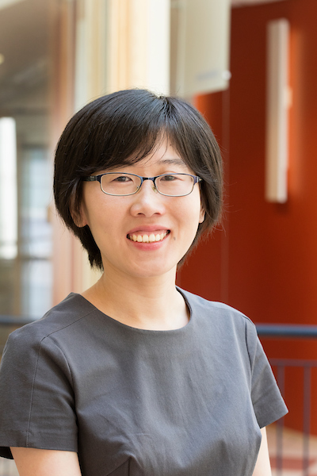

Brief bio for talks
Dr. Yuejie Chi is the Charles C. and Dorothea S. Dilley Professor of Statistics and Data Science at Yale University, with a secondary appointment in Computer Science. She received her Ph.D. and M.A. from Princeton University, and B. Eng. (Hon.) from Tsinghua University, all in Electrical Engineering. Her research interests lie in the theoretical and algorithmic foundations of data science, generative AI, reinforcement learning, and signal processing, motivated by applications in scientific and engineering domains. Among others, Dr. Chi received the Presidential Early Career Award for Scientists and Engineers (PECASE), SIAM Activity Group on Imaging Science Best Paper Prize, IEEE Signal Processing Society Young Author Best Paper Award, and the inaugural IEEE Signal Processing Society Early Career Technical Achievement Award for contributions to high-dimensional structured signal processing. She is an IEEE Fellow (Class of 2023) for contributions to statistical signal processing with low-dimensional structures.
Photo for talks

Biosketch for IEEE journals
Yuejie Chi (S'09--M'12--SM'17--F'23)
received Ph.D. and M.A. in Electrical Engineering from Princeton University in 2012 and 2009, and B.E. (Hon.) in Electrical Engineering from Tsinghua University, Beijing, China, in 2007. She is currently the Charles C. and Dorothea S. Dilley Professor of Statistics and Data Science at Yale University, with a secondary appointment in Computer Science. Her research interests lie in the theoretical and algorithmic foundations of data science, generative AI, reinforcement learning, signal processing, motivated by applications in scientific and engineering domains. Among others, she is a recipient of Presidential Early Career Award for Scientists and Engineers (PECASE), SIAM Activity Group on Imaging Science Best Paper Prize, IEEE Signal Processing Society Young Author Best Paper Award, and the inaugural IEEE Signal Processing Society Early Career Technical Achievement Award for contributions to high-dimensional structured signal processing. She was named a Goldsmith Lecturer by IEEE Information Theory Society, a Distinguished Lecturer by IEEE Signal Processing Society, and a Distinguished Speaker by ACM. She currently serves or served as an Associate Editor for IEEE Trans. on Information Theory, IEEE Trans. on Signal Processing, IEEE Trans. on Pattern Recognition and Machine Intelligence, Information and Inference: A Journal of the IMA, and SIAM Journal on Mathematics of Data Science.